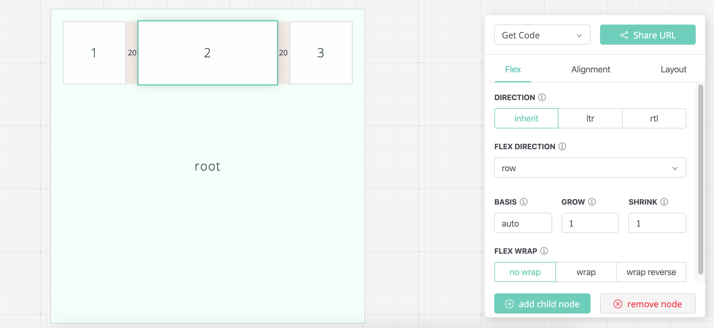
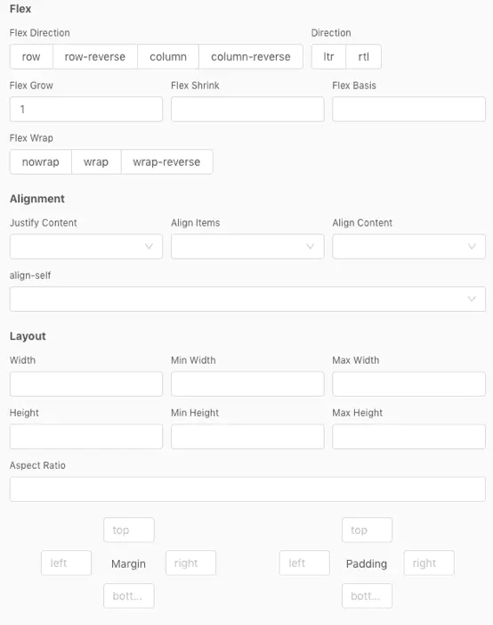
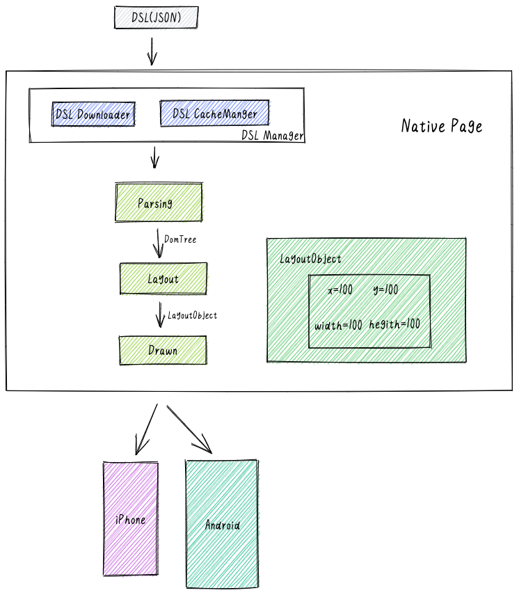
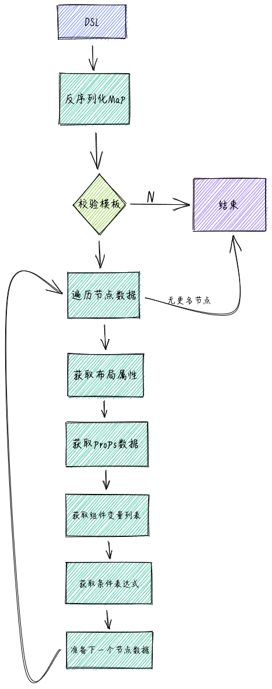
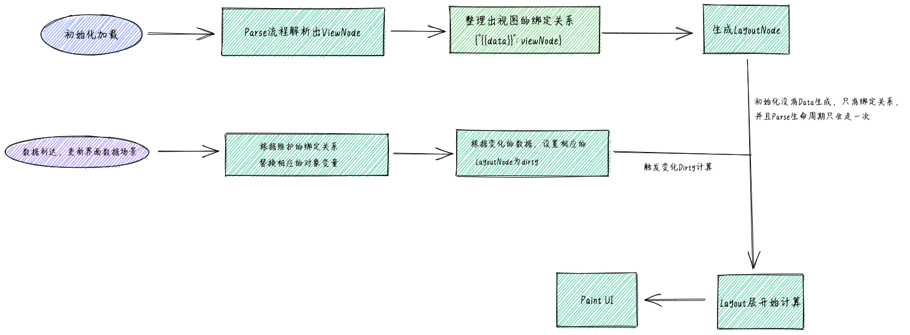
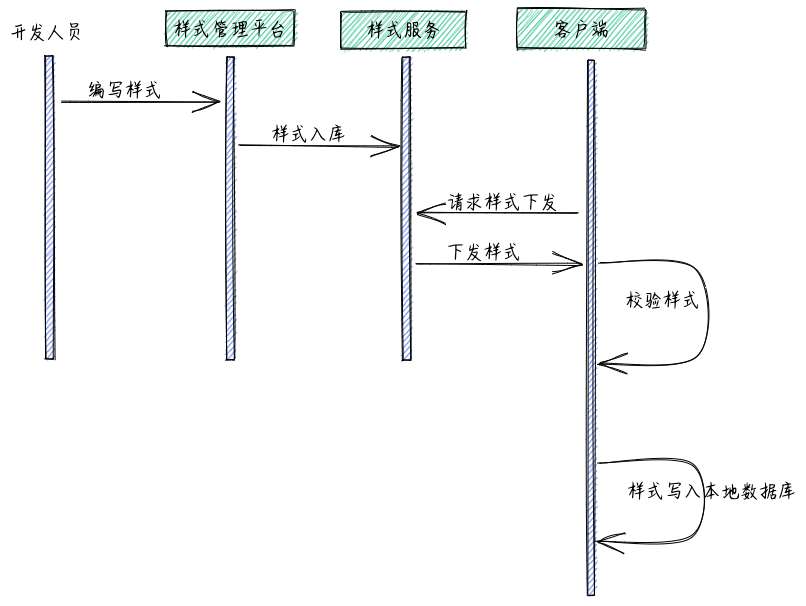

上一篇《APP动态配置，AB测试，推荐系统效果评估》里对APP动态配置略过没有深入，这里补充一些简单说明，从顶层设计的角度看下如何做APP动态化
目标
提供可视化的配置界面，开发人员（运营人员）简易的拖拽调整APP上元素的展示方式和内容。完成后直接下发到APP实现实时更新。例如20年4月4日全国为武汉默哀，很多APP一瞬间都变成了黑白色并且完成了版面特殊排版和栏目限制。


技术选型
需要的：
• 高性能和稳定性是最基本的要求；
• 为了不跟随版本发布，动态性；
• 为了解决研发成本，多端渲染；
不考虑：
• 不需要处理复杂的业务逻辑；
• 不支持动画精细的交互场景；
| 方案 | 框架 | 性能 | 动态性 | 学习成本 |
|---|---|---|---|---|
| Web+ | webview | 差 | 局限性大 | 低 |
| 基于 GPL 的 Native 增强 | React Native、Flutter | 高 | 高 | 高 |
| 基于 DSL 的 Native 增强 | Yoga、FlexboxLayout | 高 | 高 | 低 |
综合来看，用Native解析JSON + Flexbox布局的方式来作为最终方案是比较合适的。
已知美团，携程，知乎，有赞都采用这样的方案
架构设计

- Downloader：主要负责 DSL 更新与下载。
- CacheManager：顾名思义，负责 DSL 的缓存管理。
- Parse：这层主要是做 DSL 解析，负责将 JSON 数据组织成节点，供下层使用。
- Layout：此层职责为将 Parse 模块解析之后的数据计算布局，生成布局元素。
- Draw：此层职责为将 Parse 生成节点设置 Layout 层的布局信息输出 Native 视图树并提交系统完成渲染。
详细设计
DSL 的定义
变量的格式为，
示例：image 组件中 url 的属性被设置为 product 对象属性中的 imageUrl 的值。
1 | { |
1 | { |
自定义事件
示例表示在点击事件中通过 router 中的 openURL 打开了一个新的页面。
1 | { |
条件判断
示例： image 组件是否隐藏通过 =="1"来控制。
1 | { |
埋点机制
在 image 组件中声明了点击事件，并且把需要的参数，通过 data 字段一并上传服务端。
1 | { |
布局
Yoga 是 Facebook 基于 Flexbox 的跨平台布局引擎开源库，被用于 RN，Weex 等项目中，也证明了其高性能和可靠性。
1 | { |
DSL解析

视图构建
视图构建相对简单，通过解析层解析之后，每个视图组件都会ViewNode节点一一对应视图在虚拟视图树中的状态，包括了视图布局属性，视图属性等元素信息。
1 | /** 视图节点，映射 FoxPage 中的组件 */ |
在ViewNode树准备好之后，将树传递到渲染层中进行渲染操作，在渲染层中，根据ViewNode节点的类型，通过代理的方式，从注册的组件之中创建出视图实例，配合 Yoga 布局属性，转换到 Native 视图的映射，由系统完成最终的渲染。
数据更新
为了优化性能，我们针对 UI 元素有变化的部分做 dirty 处理，会触发 Layout 和 Draw 模块重计算和重绘

动态更新
动态更新能力是重要的一环，在云端更新了页面布局或者样式之后，App 需要即时拉取到最新的 DSL 模板。

-
基于自定义 DSL 进行编写样式；
-
样式文件经由样式管理平台存入云端样式数据库：
3.App 端请求样式服务接口 ;
- 样式服务接口收到请求后，根据一定的策略进行样式下发；
5.App 端将接收到的样式进行校验后，写入本地样式数据库，以备后续使用。
云端 / 本地样式数据库设计
| 字段名 | 类型 | 默认值 | 说明 | 示例 |
|---|---|---|---|---|
| name* | varchar | 样式名称，不能包含"();\t"五个字符 | style1 | |
| version* | integer | 0 | 样式版本号 | 1 |
| is_default | TINYINT | 0 | 是不是默认样式 | 0 |
| exp | varchar | 样式相关的实验信息，格式为：实验名=实验值，用半角分号分割 | exp1=A;exp2=B;… | |
| status | varchar | new | 样式的上线状态 | new:表示未上线 online:已上线 |
| iOS_version | integer | 该版本的样式支持的最低iOS客户端版本号 | 1.12.0 | |
| andorid_version | integer | 该版本的样式支持的最低andorid客户端版本号 | 1.12.3 | |
| content* | text | 样式文件内容 | ||
| hash* | varchar | 样式文件的hash，客户端校验用 | ||
| desc | varchar | 说明 |
样式下发接口设计
| 参数名 | 传递方式 | 说明 |
|---|---|---|
| platform | HEADER | 平台名称，标记Android或iOS |
| X-APP-VERSION | HEADER | 客户端版本号 |
| x-ad-styles | HEADER | k=v;k2=v2的形式传递当前客户端支持的style最新版本信息 |
- App 端请求样式下发时，会带上当前 App 端已支持的样式信息，样式服务据此判断进行增量而非全量的样式下发，节省传输成本；
- 某样式单个平台版本号为空时，不向该平台下发该样式；
- 某样式支持的最低 App 端版本大于当前 App 端版本时，不下发该样式。
其他注意事项
- App 打包需要把线上目前可用的 DSL 模板打包进 App 中，避免第一次打开 App DSL 模板未下载的时候的空窗口现象；
- 版本升级需要做好数据隔离和清除；
- DSL 最新版本下发，需要做好 backup 与异常校验；
通过动态更新机制，改变了我们发布需要跟随版本的痛点，有问题，修复之后可以直接下发到用户的 App。